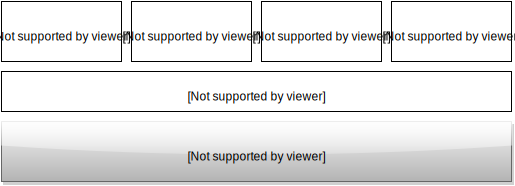
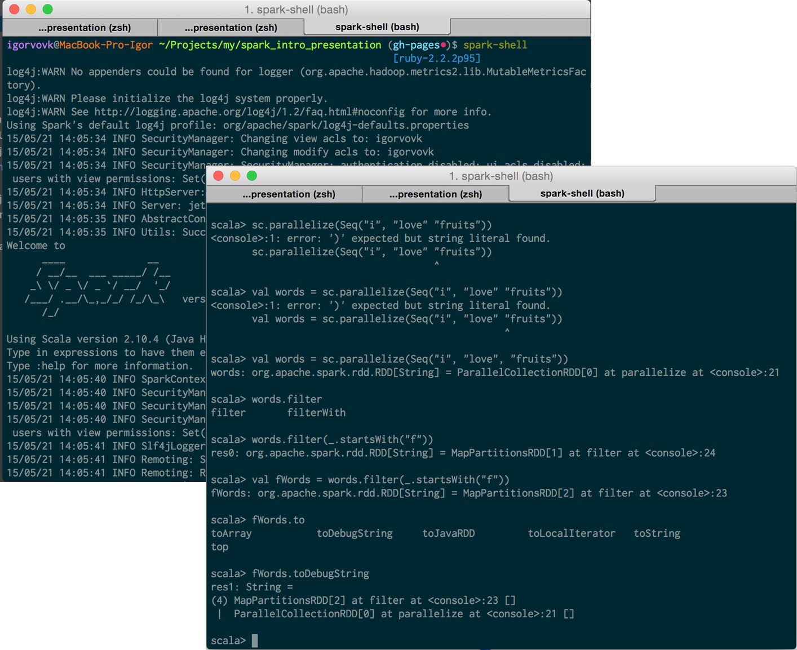
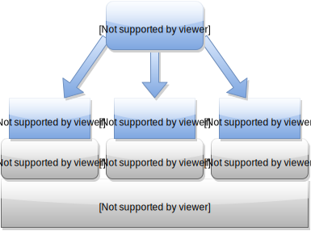
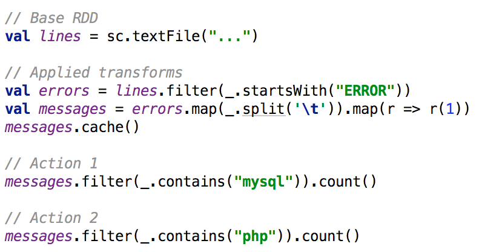
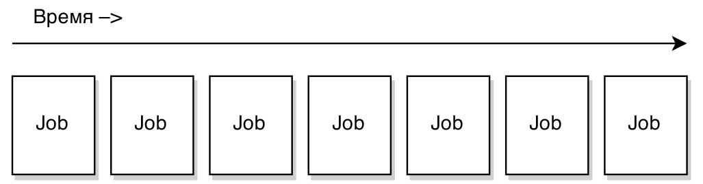
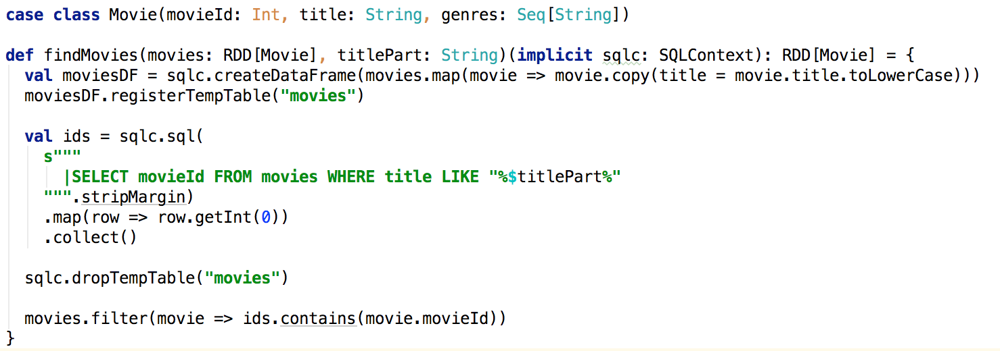

Распределенная обработка данных с использованием Apache Spark

Игорь Вовк
http://github.com/igorynia / http://facebook.com/igorynia
(Not so) long story
- 5 лет в разработке
- Из них 3 года потрачено на PHP *trollface*
- Работаю в компании x2sy.com
- Занимаюсь развитием существующих API
- Spark использую преимущественно в собственных проектах
- "На работе" пока Hadoop
Времена кодинга на PHP
Пару слов о Big Data
"Big data is like teenage sex: everyone talks about it, nobody really knows how to do it, everyone thinks everyone else is doing it, so everyone claims they are doing it..."
github.com/onurakpolat/awesome-bigdata
Фреймворки
- Hadoop MapReduce
- Apache Spark
- Storm
- Apache Tez
Преимущества Hadoop MapReduce
- большое сообщество
- легче найти квалифицированные кадры, которые работали и разворачивали большие кластеры
- в некоторых случаях легче интегрировать в существующую инфрастуктуру
Преимущества Spark
– Спарк лучше чем Хадуп. - Чем лучше? – Чем Хадуп!
Преимущества Spark
- Самый активный open-source проект в области Big Data
- низкий порог вхождения
- перфоманс
- кэширование
- ленивое выполнение
- простота в развертывании
Экосистема
Легкость в использовании
- Кода реально меньше в сравнении с hadoop
- Можно использовать Scala, Java и Python
- 80+ высокоуровневых функций
spark-shell
Архитектура
Загрузка и сохранение данных
Поддерживаются такие провайдеры:
- LFS, NFS, HDFS, Amazon S3 в текстовом формате, JSON, CSV, Hadoop SequenceFiles, сериализованные java-объекты
- БД, поддерживаются Cassandra, HBase, Elasticsearch и любая JDBC-совместимая
- Flume и Kafka для Spark Streaming
Основная структура данных – RDD*
*Resilient Distributet Dataset
Операции с RDD
- transformations - операции над RDD возвращают новый RDD
- map(...)
- filter(...)
- actions - возвращают результат в основную програму
- count()
- first()

Пример: парсинг логов
Жизненный цикл job'ов
Hadoop MR
Spark
Spark Streaming
Если нужно анализировать не только собранные данные, но и потоки c новыми данными в реалтайме.
Можно подключиться к HDFS, Flume, Kafka
Spark SQL
Можно выполнять SQL-запросы к данным Apache Hive, пишут что up to x100 раз быстрее чем Hive
GraphX
Работа с графами
Cluster Deployment
- Standalone cluster manager
- Mesos
- YARN
Dig into
- Berkley Big Data mini-course http://ampcamp.berkeley.edu/big-data-mini-course/index.html
- Learning Spark: Lightning-Fast Big Data Analysis http://www.amazon.com/gp/product/B00SW0TY8O/
- Cloudera engeneering blog http://blog.cloudera.com/blog/category/spark/
- Databricks blog https://databricks.com/blog